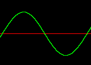
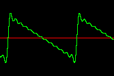
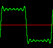
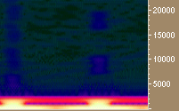
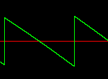
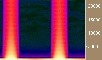
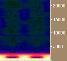
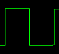
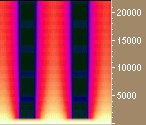

Hans Mikelson
Introduction
In the last issue I introduced Csound with some simple example orchestras and scores. In this issue I will take a closer look at Csound's oscillators. I begin by describing what oscillators are and how they have been used in electronic music. I then describe how some of them are implemented and used in Csound.
What's an oscillator?
The term oscillator is usually used in electronic music to describe something which generates a repeating signal, shape or wave form. A sine wave is one of the most common types of oscillators. Sawtooth and square waves are also common. It is possible to build electric circuits which behave as oscillators and generate voltages in repeating waveforms. It is possible to generate square waves, saw tooth waves and triangular waves with electronic circuits. This type of circuit was used in early electronic musical instruments to generate sounds.
Digital synthesizers also retain the concept of the oscillator. One simple way to make a digital oscillator is to read values from a stored table of values. To do this create a large table of values of the desired waveform. This table is then referenced using an index which points to a single value in the table. The index is moved through the table. When the end of the table is reached the index is positioned at the beginning of the table and then starts over. The rate at which the table is scanned controls the frequency of the resulting sound.
Csound's oscillators and GEN routines
Csound has a variety of different oscillators. The first one I will discuss is oscil. This oscillator relies on a table of stored values to generate a signal. The stored table usually holds a single waveform. The rate at which the table is scanned determines the frequency of the sound produced. The tables are generated by Csound's GEN routines. Last time I described how a sine table could be generated using the following GEN 10 statement.
;Table# Start TableSize TableGenerator Parameter Comment f1 0 16384 10 1 ; Sine
Once the table has been set up oscil can use it to generate a sound.
aout oscil iamp, ifqc, 1
 Figure 1. A sine wave
The generator GEN 10 can be used to make many other waveforms besides sine waves by adding additional numbers or paramters. The numbers indicate how loud each component of the sound should be. The first component of the sound is usually called the fundamental. This is the base frequency of the sound. If only the fundamental is specified then the table contains exactly one cycle of the sine waveform. The following numbers refer to higher harmonics or partials. They are usually called the first harmonic, second harmonic, third harmonic etc. The first harmonic is twice the frequency of the fundamental. This means that two complete cycles of a sine wave will fit into the table. The pitch of the first harmonic is one octave higher than the fundamental. The second harmonic is three times the frequency of the fundamental and is three octaves higher in pitch. In the following table a sine wave one octave higher and half as loud is added to the original sine wave:
f2 0 16384 10 1 .5
Some simple waveforms can be approximated by adding up a number of harmonics. A sawtooth wave can be generated by using harmonic amplitudes of 1/f. A square wave can be implemented by using amplitudes of 1/f on the odd harmonics only and amplitudes of zero for the even harmonics.
f2 0 16384 10 1 .5 .333333 .25 .2 .166667 .142857
.125 .111111 .1 .090909 .083333 .076923 ; Saw
f3 0 16384 10 1 0 .333333 0 .2 0 .142857
0 .111111 0 .090909 0 .076923 ; Square
|  |  |
Figure 2. Waveforms of bandlimited sawtooth and square waves.
At first it might seem that GEN 7 would be a good way to generate sawtooth and square waves. GEN 7 creates a series of line segments. The first and third numbers are two points which are connected by a straight line. The second number indicates the number of values it takes to connect the two points. If the second number is zero there will be a vertical step at that point. More points can be added for more complex shapes. The total number of values should equal the size of the table. If you listen to example 1 you may notice that the sounds generated with GEN 7 sound harsh and buzzy. This is due to the vertical steps in the signal. Any large vertical step in a digital signal usually results in a click or a harsh, noisy sound.
f4 0 16384 7 1 16385 -1 f5 0 16384 7 1 8192 1 0 -1 8192 -1
|  | |
|  |  |
|  | |
|  |  |
Figure 3. Waveforms and spectrograms of both band-limited and algebraic sawtooth and square waves. Aliasing is indicated by the broad color band which extends to the highest frequencies.
The resulting tone can be made more interesting by using a separate oscillator for the right and left sides and detuning them slightly. This creates the impression of a stereo image.
asigl oscil iamp, ifqc*0.999, itable
asigr oscil iamp, ifqc*1.001, itable
outs asigl, asigr
Low Frequency Oscillators
The oscil opcode can be used as a low frequency oscillator or LFO. LFO's are generally used for things such as adding vibrato, tremelo or panning. The following code illustrates the use of an lfo for vibrato.
klfo oscil .01, 6, 1 asigl oscil iamp, ifqc*0.999*(1+klfo), itable asigr oscil iamp, ifqc*1.001*(1+klfo), itable
The magnitude of the vibrato is usually only a small percentage of the total frequency. In this case the amplitude of the vibrato is .01 which is added to 1 before using it to modulate the frequency. The depth of the vibrato applied is +/- 1%.
Some sci-fi sound effects can be created by using a sawtooth or square wave to modulate the frequency. To do this try setting the LFO as follows:
klfo oscil .5, 3, 2
or
klfo oscil .1, 4, 3
In the first case the pitch is repeatedly swept downward and in the second case the pitch is bounced between two values.
An auto panning effect can be created by using a second lfo as follows:
klfo2 oscil .5, 2, 3
outs asigl*(klfo2+.4), asigr*(.4-klfo2)
The final signal is mulitplied by the output of the second LFO. The additive square wave when normalized ends up having it's "flat" sections located around .4 and -.4 rather than at .5 and -.5 as one might guess. This is due to the bumps that occur at the corners of the square wave. Therefore .4 is added to the second LFO to create the panning effect.
Flexible Envelopes
The final aspect of oscil considered in this article is its use as a flexible envelope generator. This is where using GEN 7 makes the most sense. The trick to using oscil as an envelope is to set the frequency to 1/idur. That way only one cycle of the wave form is generated over the duration of the note.
kenv oscili 1, 1/idur, ienv
outs asigl*kenv, asigr*kenv
It is often more convenient to use smaller tables for envelopes but this may introduce a stepping sound. To avoid this a slightly different oscillator, oscili is used. This oscillator performs linear interpolation between values in the table. This means that the values in the table are connected by a straight line instead of jumping from one value to the next. This can be used to improve sound quality. To use oscili an additional point must be specified in the table. Normally table sizes are powers of 2 (2, 4, 8, 16, 32, 64, 128, 256, 512, 1024, etc.) The oscili opcode requires a table size which is a power of 2 + 1 (3, 5, 9, 17, 33, 65, 129, 257, 513, 1025 etc.)
f6 0 1025 7 0 128 1 128 .8 256 .6 256 .6 257 0
The table f6 is similar to an ADSR envelope. I often use the 1/idur trick and the oscili opcode to simulate twisting knobs.
Conclusions
This article has shown that quite complex instruments can be created almost entirely with the oscil opcode. If you are going to learn an opcode this should be one of the first learned. It can act as an audio oscillator generating a variety of tones, a LFO which can be used for sound effects, and even as an envelope. There are many other uses of oscil which are not demonstrated in this article. This opcode will take you quite far in developing instruments in Csound.